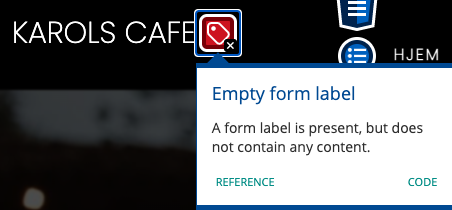
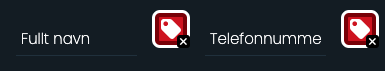

Hvordan vi testet siden vår for universell utforming og tilgjenlighet
Når man lager en nettside, er det viktig at den er brukbar for alle. WCAG 2.1 (Web Content Accessibility Guidelines) gir anbefalinger for hvordan man kan gjøre en nettside mer tilgjengelig for de fleste, uansett funksjonshemninger. Når vi skulle i gang med å bestemme oss for design både før og under design prosessen, måtte vi ta dette i konsiderasjon. Vi valgte å bruke en automatisert test, ved å bruke WAVE Web Accessibility Evaluation Tool.
Først måtte vi velge hvilke varger som sto i kontrast til hverandre. Vi ar innom mørkeblå og hvit, men endte opp med de to fargene som er mest forskjellig fra hverandre, nemlig svart bakgrunn og hvit tekst. For knapper, valgte vi å endre fargen for å gjøre de mer synlige som knapper. Vi valgte derfor å gå med en oransje bakgrunnsfarge med hvit tekst, så den skiller seg ut. Når det kommer til en nettside for en restaurant hender det at det å gjøre en reservasjon er hovedmålet, og derfor en knapp som burde skille seg ut.
Når vi var ferdige med nettsiden, kjørte vi den gjennom Webaims Web Accessibilty Evaluation Tool. Før dette publiserte vi nettsiden gjennom github for å få en link vi kunne kjøre gjennom programmet. Vi fikk en “Error” varsling. Det er fordi at når man bruker nettsiden på en mindre skjerm, eks en mobiltelefon, så vil det dukke opp en toggle-button som vil gi tilgang på navigasjonsbaren, men den er satt til display:none, og fremstår derfor som en tom label, og innholdet er "span" tagger som brukes for de tre linjene, kjennetegnet som en “hamburger-meny”.
Vi fikk også noen alerts på den første testen vår. Det gjaldt bruk av overskrifter, hvor vi hadde hoppet fra h2 til h5.
Når vi kom til reservasjons siden, kom det noen flere “Error” varslinger, fordi vi ikke hadde noen tilsvarende etikett til hvert input felt. Istedet har vi lagt inn placeholder tekst som beskriver hvert input felt, så vi tenkte at det ikke var nødvendig.
Vi måtte også gjøre noen tester med oss selv som forsøkskaniner, ved å se over siden som en med nedsatt synsevner, og en med en motorisk funksjonshemning. Det endte med at vi skjønte at vi måtte forandre tekststørrelsen noen plasser, til en større verdi, for å gjøre den mer lesbar dersom en med nedsatt syn skulle inn på siden å lese om cafeen. Vi gjorde litt research og ifølge Accessible Web så er det fra og med 16px som er minimum font-size.
Vi forsikret oss også om det var mulig å navigere seg på siden ved bruk av “tab” og “tab + shift” for å gå frem og tilbake til knappene og sidene. Denne testen var for å teste at en med motorisk funksjonshemning som sliter med å bevege seg med styreplate/mus, skal også ha mulighet til å utforske siden.